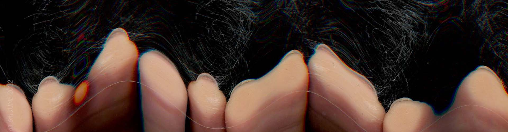
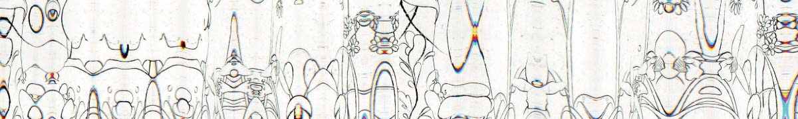

-
BROWSERS AND 'BROWSERS' Experimental Publication and Website 
-
DUALISTIC RELATIONSHIP; DOES IT REVEAL OR CONCEAL? - Part 2 Experimental Publication and Website -
DUALISTIC RELATIONSHIP; DOES IT REVEAL OR CONCEAL? - part 1 2D&3D Graphic, Silkscreen, Moving Image, and Photography -

SURFACE AS A SCREEN Rubbing, Scratching, Digital Rubbing, and Interactive Web -

LIKE A PURE SPIRIT Experimental Video and a Research Book -
LINE CONFERENCE DESIGN LINE Conference Branding Design